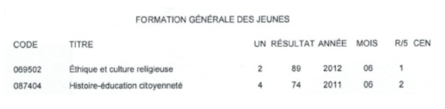
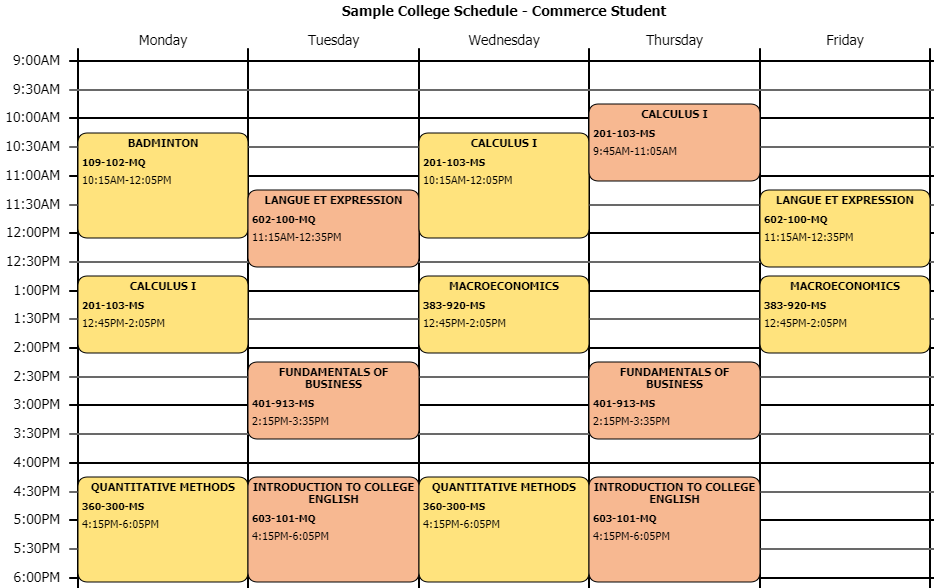

What is CEGEP?
CEGEP (also written as CÉGEP, cegep, cégep, etc.), short for "Collège d'enseignement général et professionnel", is a type of post-secondary institution exclusive to Québec's education system. CEGEP is also often referred to as college. There are roughly 100 CEGEPs in the province, though only a select few offer English instruction.
Cégep de Saint-Laurent

Photo by Denis-Carl Robidoux, CC BY-NC 2.0 licence.
Internationally recognized for their high-quality education, CEGEPs provide a tight-knit and stimulating learning environment for students. Studying in a CEGEP is not only a chance for you to study what truly interests you, but also to participate in student life, meet new people, and experience more freedom. CEGEP will open many doors for you: it'll prepare you for higher education and for entering the workforce.
Sources: SRAM, Fédération des cégeps, MTL Blog
Quebec's School System
The minimum* requirement for CEGEP is a Quebec SSD (secondary school diploma). An SSD requires at least 54 credits in Secondary IV and V, where at least 20 credits must be from Secondary V (or vocational training). Students must also pass all of the following:
- Secondary V language of instruction (English or French), 6 credits
- Secondary V second language (French or English), 4 credits (at least)
- Secondary IV Mathematics, 4 credits (at least)
- Secondary IV Science and Technology (ST) or Applied Science and Technology (AST), 4 credits
- Secondary IV History and Citizenship Education, 4 credits
- Secondary IV Arts Education, 2 credits
- Secondary V Ethics and Religious Culture or Physical Education and Health, 2 credits
Notice that only credits and grades from Secondary IV and Secondary V are considered for your diploma, as is the case with CEGEP applications. *Please note that many CEGEP programs have prerequisites beyond a secondary school diploma. For more details, see Programs.
Quebec youth sector Achievement Record
From "Achievement Record" by Ministère de l'Éducation et Ministère de l'Enseignement supérieur. Copyright by Gouvernement du Québec, 2021.
Read the UN column on your Achievement Record, or the Credits row on your high school report card (final term), to check the number of credits you obtain from a particular course. You can also look at the course code's last digit. This works for both three-digit (typically used) and six-digit (often seen on student schedules and report cards) codes. Here are some common examples:
- Math 426 = secondary 4 scientific math, 6 credits
- This course code may also be seen as 565426 (the six-digit code), in which case the fourth digit represents the grade level and the last digit still indicates the number of credits
- Français 406 = secondary 4 enriched FSL (French as a second language), 6 credits
- History 404 = secondary 4 history, 4 credits
- Science and Technology 444 = secondary 5 science, 4 credits
- May be seen as 555444
- Environmental Science and Technology 404 = secondary 4 environmental science (EST), 4 credits
- May be seen as 558404
- Sometimes written as Environnemental Science and Technology
- EST is the prerequisite science course for Physics and Chemistry
- English 406 = secondary 4 English Language Arts (ELA), 6 credits
- Ethics 502 = secondary 5 Ethics and Religious Culture (ERC), 2 credits
Students have the choice of applying to pre-university programs (usually two years) or career programs (usually three years) for CEGEP. Here's a diagram overview of the Quebec school system from Cégeps du Québec:

From "Quebec School System" by Cégeps du Québec. Copyright by Cégeps du Québec, 2019.
The type of college program you apply to will depend on several factors. CEGEP programs are explained in more depth later in Programs.
Sources: Quebec Ministry of Education, various course outlines and student schedules
Diploma of Collegial Studies
In order to graduate and receive a diploma of Collegial Studies (DCS) from an English-language college, students must minimally meet the following General Education and complementary course requirements:
- Four English courses
- Two French courses
- Three Humanities courses
- Three Physical Education courses
- Two complementary courses
- A complementary (course), unlike electives, are courses that students must take and select from disciplines outside those used in their program areas of study.
In addition, CEGEP students must pass the English Exit Exam* (Épreuve uniforme de langue), and complete a Comprehensive Assessment/Exam (Épreuve synthèse) which evaluates their mastery of program objectives. The format of the latter evaluation is specified by the individual programs; depending on the college and program, the Comprehensive Assessment could be a project or portfolio of some sort. College students should receive specifications for this assessment when it is time for them to begin and complete it.
Students will also follow a specific education pattern, completing various concentration courses as per their program requirements. For example, Science students must take certain Physics, Chemistry and Biology courses that may not be required of Arts students—more on this in the Programs section of the site.
Furthermore, meeting these DCS requirements does not necessarily mean that a student will have satisfied conditions for university admission. Students should verify university admission criteria with an academic advisor and/or online to ensure they obtain all university prerequisites.
*As of May 13, 2021, Bill 96 requires students of anglophone colleges to pass a French Exit Exam as well, but the application of such an evaluation has not yet been determined or announced.
Sources: Dawson College Registrar, Quebec Ministry of Higher Education, Vanier College Social Science, Vanier College Liberal Arts
Studying at CEGEP
Industrial Electronics at Vanier College

Photo by Vanier College, CC BY-NC-ND 2.0 licence.
Each year at CEGEP is split into two 16-week semesters, Fall and Winter. The fall semester begins in late August and ends in December (including final exam period), while the winter semester starts around mid-January and ends in May. Each college's academic calendar is slightly different and specifies the various blocks of the school year.
Each semester, students will follow a weekly class schedule resembling university schedules, for which they can select courses and/or class times. A schedule might look something like this:
For each term, there are midterm exams (October, March) and final exams (December, May). There may also be a shorter summer term available (around June to August) for students wishing to retake a failed course, complete DCS (college diploma) requirements, or to meet university prerequisites. The passing grade remains 60% for college courses.
CEGEP has a much faster pace compared to high school, so while college does offer more freedom and choices, it also comes with more responsibility and independence.
Sources: Quebec Ministry of Education, SRAM